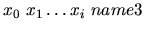
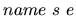
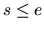

| Keeps Going and Going and ... |
Lazy functional languages like Haskell and Miranda support features that are not found in other programming languages, including infinite lists. Consider the following simple (and useful) recursive declaration:
letrec count n = cons n (count (n+1)) in count 0
The function cons constructs lists, so the above declaration creates the following structure:
cons 0 (count 1) = cons 0 (cons 1 (count 2)) = cons 0 (cons 1 (cons 2 ...)) = [0,1,2,...]
Lazy languages can do this because they only evaluate expressions that are actually used. If a program creates an infinite list and only looks at items 2 and 3 in it, the values in positions 0 and 1 are never evaluated and the list structure is only evaluated so far as the fourth node.
It is also possible to use more than one function to build an infinite list.
Here is a declaration
that creates the list ["even","odd","even",...]:
letrec even = cons "even" odd odd = cons "odd" even in even
There are also functions that manipulate infinite lists. The functions take and drop can be used to remove elements from the start of the list, returning the (removed) front elements or the remainder of the list, respectively. Another useful function is zip, which combines two lists like the slider on a zipper combines the teeth. For example,
zip (count 0) (count 10) = [0,10,1,11,2,12,...]
Your task is to implement a subset of this functionality.
The first line of each dataset consists of two positive integers, n and m. n is the number of declarations to follow and m is the number of test cases.
Each declaration takes the form name = expr. There are two forms for expr : zip name1 name2
and
.
In the first case, name is the result of zipping name1 and name2
together. The other case defines the first i + 1 non-negative integers in the
list name (where i is at least 0) and name3 is the name of the list that continues it (mandatory--all lists will be infinite).
The test cases take the form
,
where s and e are non-negative
integers, 
and
e - s < 250.
No line of input will be longer than 80 characters. Names consist of a single
capital letter.
1 5 3 S = 4 3 2 1 A O = 1 O E = 0 E A = zip E O Z = zip Z S A 43455436 43455438 S 2 5 Z 1 10
0 1 0 2 1 0 1 4 4 3 4 2 3 1 4 0 2